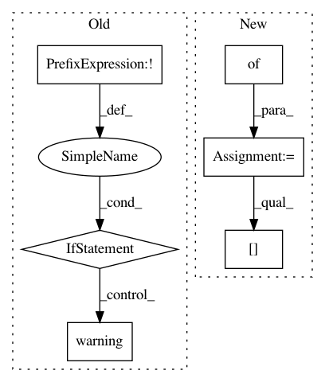

2d8bd9f10f8aec820a573238cb9eb6c82eac18ae,perfkitbenchmarker/kubernetes/kubernetes_virtual_machine.py,KubernetesVirtualMachine,_SetSshDetails,#KubernetesVirtualMachine#,282
Before Change
stdout, _, _ = vm_util.IssueCommand(get_internal_ip_cmd,
suppress_warning=True)
if not stdout:
logging.warning("Internal POD IP address not found. External address"
"will be used instead.")
self.internal_ip = self.ip_address
else:
self.internal_ip = stdout.replace(""", "")
def _ConfigureProxy(self):
In Docker containers environment variables from /etc/environment
are not sourced - this results in connection problems when running
After Change
"get", "service", self.name, "-o", "json"]
stdout, _, _ = vm_util.IssueCommand(get_service_cmd, suppress_warning=True)
service = json.loads(stdout)
ports = service.get("spec", {}).get("ports", [])
if not ports:
raise Exception("Port of service %s not found. Retrying." % self.name)
self.ssh_port = ports[0]["nodePort"]
get_pod_cmd = [FLAGS.kubectl, "--kubeconfig=%s" % FLAGS.kubeconfig,
"get", "pod", self.name, "-o", "json"]
stdout, _, _ = vm_util.IssueCommand(get_pod_cmd, suppress_warning=True)
In pattern: SUPERPATTERN
Frequency: 3
Non-data size: 6
Instances
Project Name: GoogleCloudPlatform/PerfKitBenchmarker
Commit Name: 2d8bd9f10f8aec820a573238cb9eb6c82eac18ae
Time: 2015-10-30
Author: connormccoy@google.com
File Name: perfkitbenchmarker/kubernetes/kubernetes_virtual_machine.py
Class Name: KubernetesVirtualMachine
Method Name: _SetSshDetails
Project Name: HazyResearch/fonduer
Commit Name: 4f75a1f7aba45eb4cb72841c6efcd3d3954a10cd
Time: 2018-07-18
Author: lwhsiao@stanford.edu
File Name: fonduer/parser/parser.py
Class Name: ParserUDF
Method Name: _parse_table
Project Name: Microsoft/nni
Commit Name: 2de52a8976971da4836727ba9242fedcc7474878
Time: 2020-01-16
Author: 656569648@qq.com
File Name: src/sdk/pynni/nni/compression/torch/compressor.py
Class Name: Pruner
Method Name: export_model